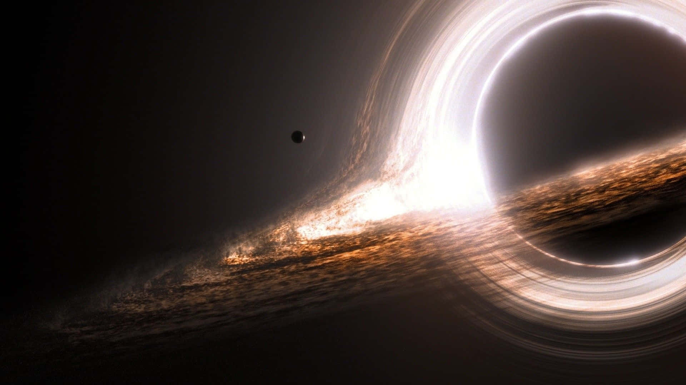

O Universo é a totalidade de tudo o que existe fisicamente — espaço, tempo, matéria e energia — incluindo planetas, estrelas, galáxias e o espaço entre elas. Seu raio observável é de cerca de 46 bilhões de anos-luz. Governado por leis físicas universais, o Universo é estudado por meio de observações que indicam sua evolução desde o Big Bang, ocorrido nos primeiros instantes do Tempo de Planck. Evidências, como as explosões de supernovas, revelam que ele está se expandindo em ritmo acelerado.
Apesar de muito já ter sido descoberto, ainda há inúmeros mistérios não resolvidos, como a matéria escura e a energia escura, que compõem a maior parte do cosmos. A ciência continua avançando com telescópios e missões espaciais para tentar entender a origem, estrutura e o futuro do universo. O ser humano está apenas começando a decifrar essa imensidão que nos cerca.

O buraco negro Gargantua, retratado no filme Interestelar, é uma representação impressionante baseada em cálculos reais da relatividade geral. Esse objeto massivo serviu como inspiração para visualizarmos como seria um buraco negro de verdade, com seu disco de acreção distorcido pela intensa gravidade. Buracos negros são regiões do espaço-tempo onde a gravidade é tão extrema que nem mesmo a luz consegue escapar. Eles surgem do colapso de estrelas massivas ou da fusão de outros buracos negros e podem crescer absorvendo matéria ao redor.
O limite que marca o ponto sem retorno é chamado de horizonte de eventos. Embora invisíveis, buracos negros podem ser detectados por seus efeitos sobre estrelas próximas ou pela radiação emitida pelo disco de matéria que os cerca. Alguns, como o Sagitário A* no centro da Via Láctea, são supermassivos e possuem milhões de vezes a massa do Sol. A existência dos buracos negros foi confirmada por eventos como a detecção de ondas gravitacionais pelo LIGO (2016) e, em 2019, pela primeira imagem direta de um buraco negro no centro da galáxia Messier 87, feita pelo Event Horizon Telescope.
⬅️ Voltar para a Página Inicial